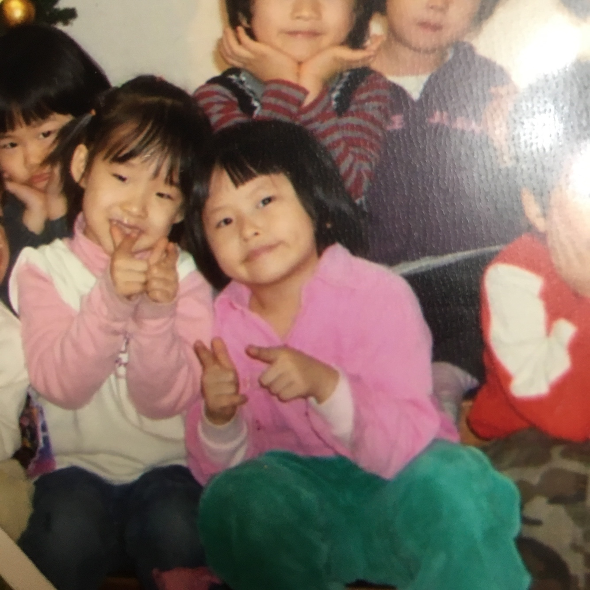
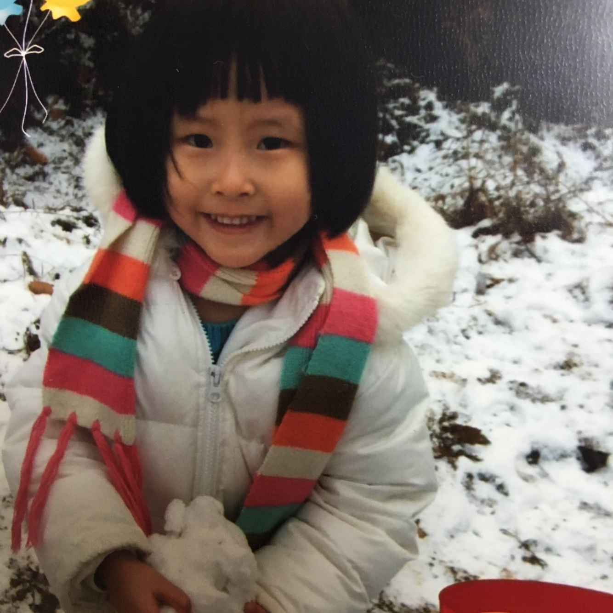
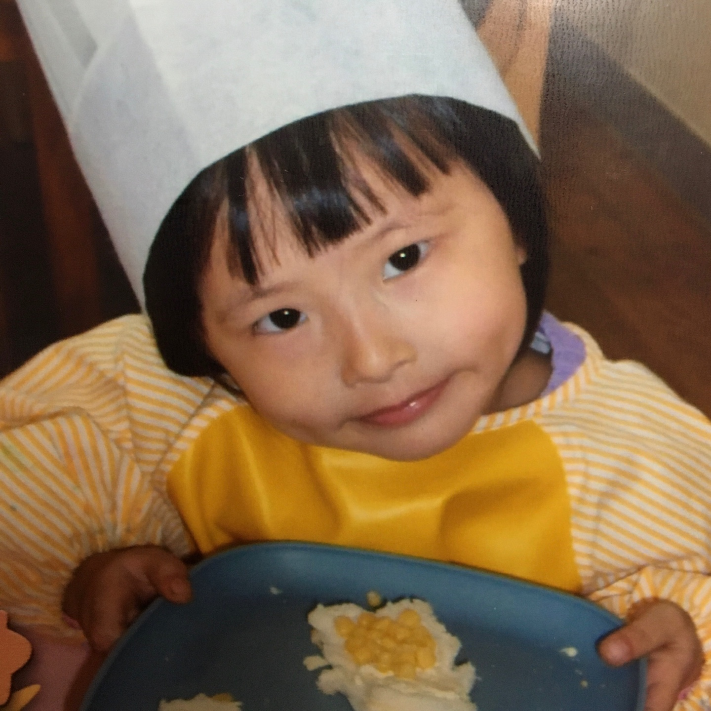

<DOCTYPE html>
    <html>
    <head>
        <style>
            div {
                width:200px; height:50px; color:white;
                background:rgb(234, 199, 208);opacity:0.9;
            }
            div.d1:hover{
                width: 300px; height:50px; color:white;
                background:rgb(189, 101, 130);opacity:0.9;
                transition: all 1.0s linear 0.5s;
            }
            div.d2:hover{
                width: 300px; height:100px; color:white;
                background:rgb(189, 101, 130);opacity:0.9;
                transition: all 1.0s linear 0.5s;
            }
        </style>
        <meta charset="UTF-8">
        <title>childhood</title>
    </head>
    <body>
        <!--헤더 부분-->
        <header>
            <center>
                <a href="https://gyullee.github.io/gyulLee/hw04/hw04.html" target="_blank" title="클릭하세요!">
                    
                </a>
            </center>
            
        </header>
        <br><br><br><br>
        <h2>나의 어릴 적</h2>
        <strong>home으로 가려면 My intro 를 클릭하세요.</strong>
        <br><br>
        <!--본문 부분-->
        분홍 박스에 마우스 커서를 올리세요.<br>

        
        <div class="d2" style="float:left">
            육아 난이도 최상의 장난꾸러기였다.<br>
            인형놀이를 좋아해 인형에 파묻혀 자는 게 취미였다.</div>
        
        <div class="d1" style="float:right">
            엄마의 영향을 받아<br>
            어렸을 때부터 단순하고 천진난만했다.</div><br>
        
        <div class="d2" style="float:left">
            만드는 걸 너무나 좋아해서<br>
            요리, 미니어쳐 등 만들기에 발벗고 나서는 아이였다.</div><br>
    </body>
    </html>
